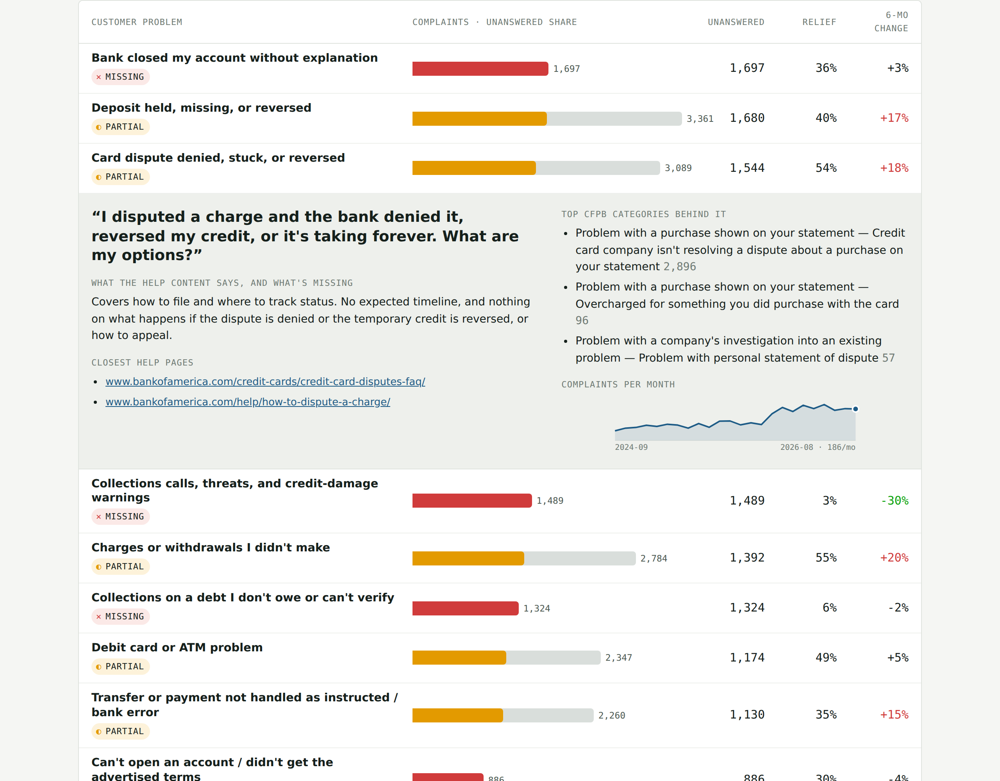
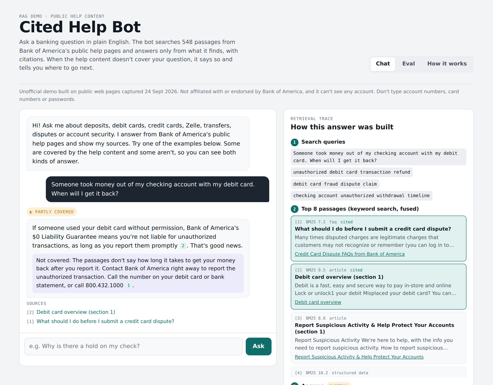

I compared 30,763 CFPB complaints about Bank of America with the bank's public help content to find what customers struggle with that the help center doesn't answer. Then I built a cited chatbot over that help content and tested it on those gaps.

An interactive report of 24 customer problems ranked by the complaints the help content leaves unanswered, with evidence for every coverage rating and the five things a chatbot should cover first.
Open the report →
A RAG chatbot with citations, a retrieval trace, a fact check and handoffs, plus the 40-question eval. This public demo replays saved answers; search runs live in your browser.
Open the demo →